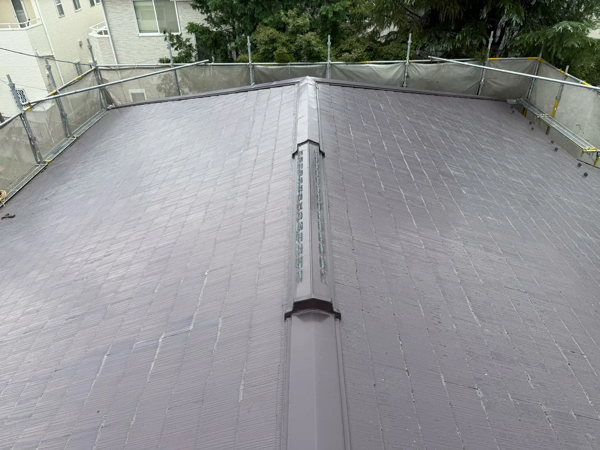
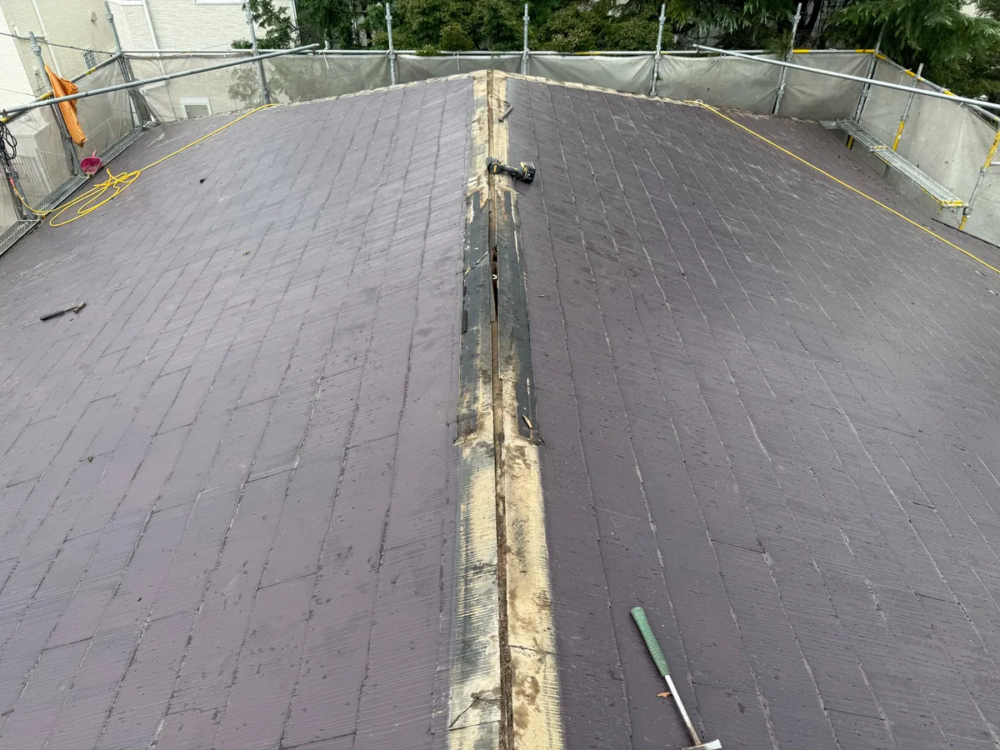
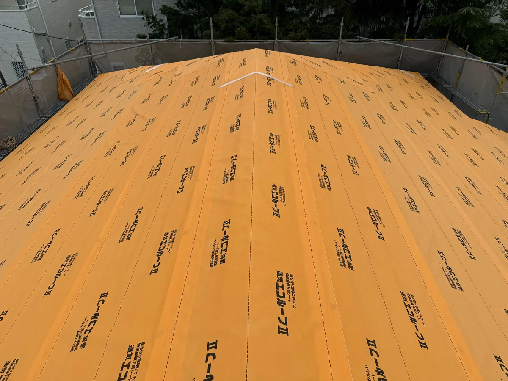
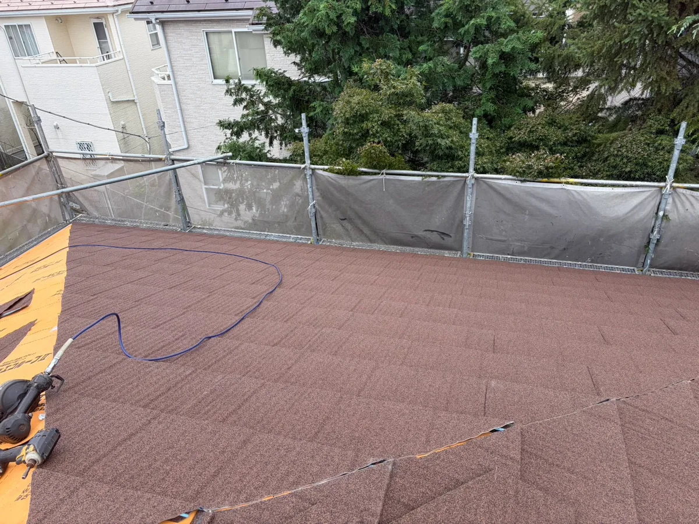
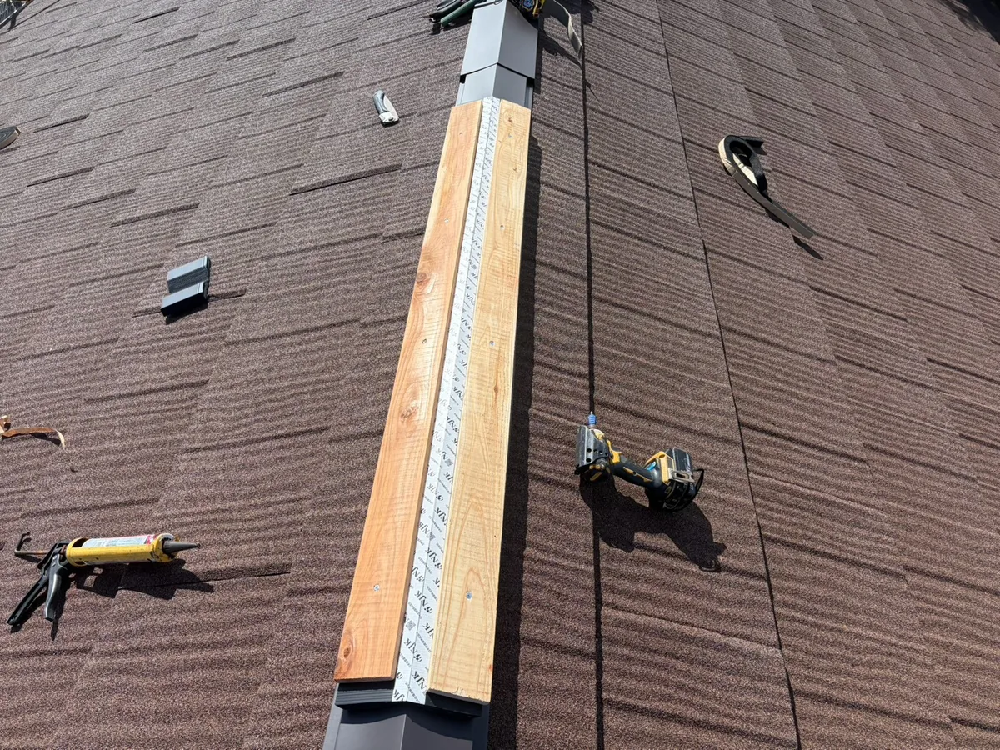
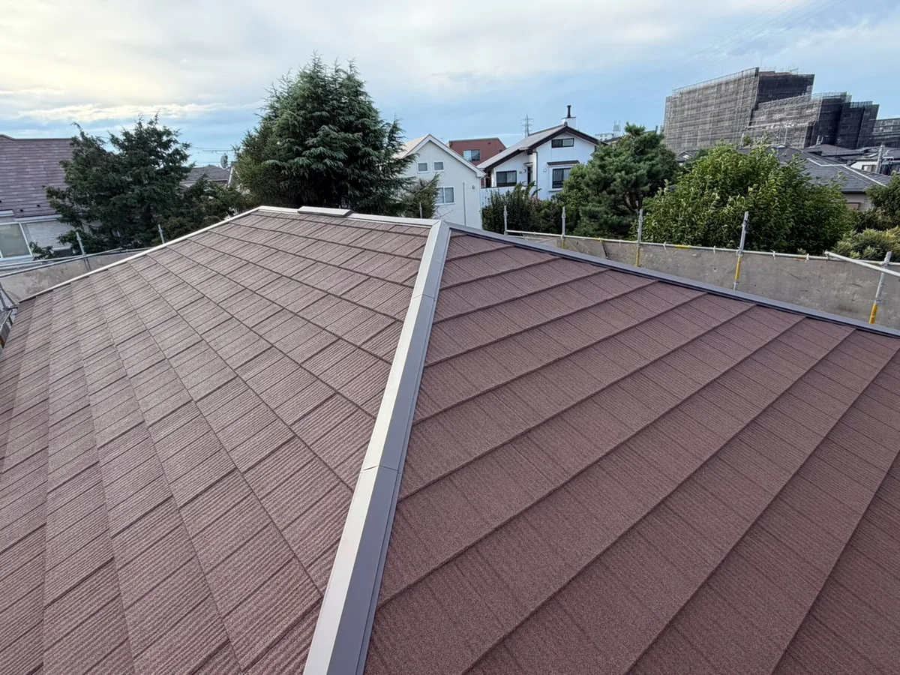

6 PHOTOS
屋根カバー工法
原山 Y様邸｜屋根カバー工法
工事内容を詳しく紹介
既存屋根を残し、下葺き材と新しい屋根材を重ねるカバー工法。棟部分の撤去から屋根材・棟板金の仕上げまでを紹介します。
工事内容・施工写真を見る
屋根カバー工法
原山 Y様邸｜屋根カバー工法
工事内容を詳しく紹介
既存屋根を残し、下葺き材と新しい屋根材を重ねるカバー工法。棟部分の撤去から屋根材・棟板金の仕上げまでを紹介します。
工事内容・施工写真を見る既存の屋根を残し、防水の層と屋根材を重ねる。
- 施工前の状態
- 施工前は、平らな屋根材が重なり、屋根の頂部を棟板金が覆っていました。同じ屋根面を追った写真で、既存屋根を残したまま工事を進める様子をご覧いただけます。
- 工事内容
- はじめに棟板金とその下地を撤去。既存屋根の上に下葺き材を施工し、新しい屋根材を軒先側から葺き進めました。最後に棟の下地と棟板金を取り付け、屋根の頂部まで仕上げています。
- 使用した部材
- 下葺き材、屋根材、棟の下地材、棟板金。屋根材の下に隠れる層から、表面の仕上げまでを順に施工しています。
- 工事後の仕上がり
- 既存屋根の表面から、新しい屋根材と棟板金で覆われた仕上がりに変わりました。施工前・下葺き材・屋根材・完成までの6枚で、重ね葺きの工程を紹介しています。






写真を押すと大きく表示できます。